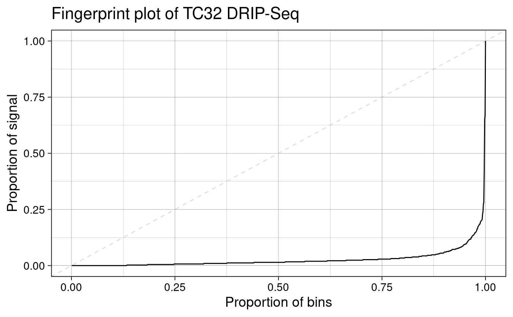
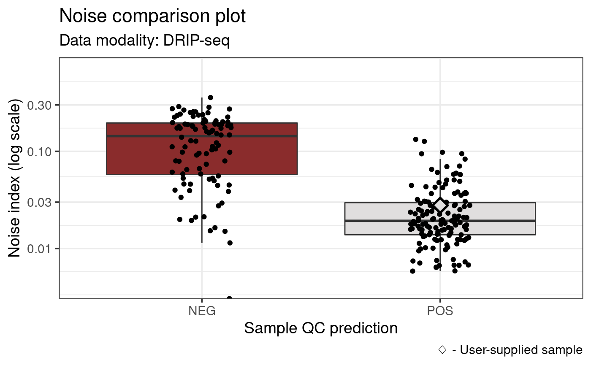

Analyzing R-loop data with RLSeq
Henry Miller
Alex Bishop Laboratory, UT Health San AntonioBioinformatics Research NetworkSource:
vignettes/RLSeq.Rmd
RLSeq.RmdAbstract
This vignette covers basic usage of RLSeq for evaluating data quality and analyzing R-loop locations. RLSeq is part of RLSuite, an R-loop analysis toolchain. RLSuite also includes RLHub, RLBase, and RLPipes.
Introduction

RLSeq is a package for analyzing R-loop mapping data
sets, and it is a core component of the RLSuite toolchain. It
serves two primary purposes: (1) to facilitate the evaluation of data
quality, and (2) to enable R-loop data analysis in the context of
genomic annotations and the public data sets in RLBase. The main analysis steps can be conveniently
run using the RLSeq() function. Then, an HTML report can be
generated using the report() function. Individual steps of
this pipeline are also accessible through separate functions which
provide custom analysis capabilities.
This vignette will showcase the primary functionality of RLSeq with data from a publicly-available R-loop data mapping study in Ewing sarcoma cell lines, GSE68845. We have selected two DNA-RNA Immunoprecipitation sequencing (DRIP-seq) samples for demonstration purposes: (1) SRX1025890, a positive R-loop mapping sample (“POS”; condition: S9.6 -RNaseH1), and (2) SRX1025892, a negative control (“NEG”; condition S9.6 +RNaseH1). We will begin by showing a quick-start analysis on SRX1025890, and then we will proceed to discuss, in detail, the specific steps of this analysis with both samples.
Quick-start
Here, we demonstrate a simple analysis workflow which utilizes a
publicly-available data set stored in RLBase (a database of R-loop consensus
regions and R-loop-mapping experiments, also part of RLSuite). The commands below download these
data, run RLSeq(), and generate the HTML report.
# Peaks and coverage can be found in RLBase
rlbase <- "https://rlbase-data.s3.amazonaws.com"
pks <- file.path(rlbase, "peaks", "SRX1025890_hg38.broadPeak")
cvg <- file.path(rlbase, "coverage", "SRX1025890_hg38.bw")
# Initialize data in the RLRanges object.
# Metadata is optional, but improves the interpretability of results
rlr <- RLRanges(
peaks = pks,
coverage = cvg,
genome = "hg38",
mode = "DRIP",
label = "POS",
sampleName = "TC32 DRIP-Seq"
)
# The RLSeq command performs all analyses
rlr <- RLSeq(rlr)
# Generate an html report
report(rlr, reportPath = "rlseq_report_example.html")The report generated by this code is found here.
Preliminary
Installation
RLSeq should be installed alongside RLHub to facilitate access to the data required for annotation and analysis. When downloading RLSeq from bioconductor, RLHub is already included.
if (!requireNamespace("BiocManager", quietly = TRUE))
install.packages("BiocManager")
BiocManager::install("RLSeq")Both packages can also be installed from github.
library(remotes)
install_github("Bishop-Laboratory/RLHub")
install_github("Bishop-Laboratory/RLSeq")Obtaining data
RLSeq is compatible with R-loop data generated from a variety of pipelines and tools. However, it is strongly recommended that you use RLPipes, a snakemake-based CLI pipeline tool built specifically for upstream processing of R-loop datasets.
RLPipes can be installed using mamba or conda (slower).
# conda install -c conda-forge mamba
mamba create -n rlpipes -c bioconda -c conda-forge rlpipes
conda activate rlpipesA typical config file (CSV) should be written as
such:
| experiment |
|---|
| SRX1025890 |
| SRX1025892 |
And then the pipeline can be run.
RLPipes build -m DRIP rseq_out/ tests/test_data/samples.csv
RLPipes run rseq_out/The resulting directory will contain peaks/,
coverage/, bam/, and other processed data sets
which are used in downstream analysis.
Note: If you choose to use a different pipeline, use macs2/macs3 for peak calling to ensure compatibility with RLBase.
End-to-end RLSeq
Here, we describe each step of the analysis pipeline which is run as
part of the RLSeq() command.
Data sets
For this example, we will be using DRIP-Seq data from a 2018
Nature paper on R-loops in Ewing sarcoma (Gorthi et al. 2018). The sample has been IP’d
for R-loops (S9.6 -RNaseH1; label: “POS”). The data was
processed using RLPipes and uploaded to RLBase. Peaks are converted to
GRanges objects using a helper function from
regioneR. URLs and file paths for peak files can also be
supplied directly to without this step.
rlbase <- "https://rlbase-data.s3.amazonaws.com"
# Get peaks and coverage
s96Pks <- regioneR::toGRanges(file.path(rlbase, "peaks", "SRX1025890_hg38.broadPeak"))
s96Cvg <- file.path(rlbase, "coverage", "SRX1025890_hg38.bw")For demonstration purposes, only 10000 ranges are analyzed here.
# For expediency, peaks we filter and down-sampled to the top 10000 by padj (V9)
# This is not necessary as part of the typical workflow, however
s96Pks <- s96Pks[s96Pks$V9 > 2,]
s96Pks <- s96Pks[sample(names(s96Pks), 10000)]Finally, RLRanges objects were constructed. These are
the primary objects used in all RLSeq functions.
RLRanges are an extension of GRanges which
provide additional metadata and validation functions.
## Build RLRanges ##
# S9.6 -RNaseH1
rlr <- RLRanges(
peaks = s96Pks,
coverage = s96Cvg,
genome = "hg38",
mode = "DRIP",
label = "POS",
sampleName = "TC32 DRIP-Seq"
)Sample quality
Sample quality is assessed by analyzing the association of peaks with R-loop-forming sequences (RLFS). RLFS are genomic sequences that favor the formation of R-loops (Jenjaroenpun et al. 2015). While R-loops can form outside RLFS, there is a strong relationship between them, which provides an unbiased test of whether a set of peaks actually represents successful R-loop mapping.
Permutation tests
RLSeq first implements a permutation test to evaluate the enrichment of peaks within RLFS and build a Z-score distribution around RLFS sites.
# Analyze RLFS for positive sample
rlr <- analyzeRLFS(rlr, quiet = TRUE)The resulting objects now contain the permutation test results. These
results can be easily visualized with the plotRLFSRes
function.
plotRLFSRes(rlr)Plot of permutation test results (S9.6 -RNaseH1).
Quality classification
The quality classifier is an ensemble model based on an
online-learning scheme. It predicts “POS” for samples which are
predicted to show robust R-loop mapping and “NEG” for samples which are
not. The latest version can be accessed via RLHub. For greater detail, please see the RLHub::modes reference. To apply the
model and predict sample quality, use the
predictCondition() function.
# Predict
rlr <- predictCondition(rlr)The results from testing our example samples:
## Prediction: POSNoise analysis
The next step of the RLSeq quality workflow is to analyze the
noisiness of the coverage signal for the user-supplied sample (requires
that coverage is provided when creating the
RLRanges object). The approach used in this analysis step
was derived from the work of Diaz et al., 2012 (Diaz et al. 2012). The method is run using the
following function:
rlr <- noiseAnalyze(rlr)The results can then be visualized in two ways. A Fingerprint plot and a noiseComparisonPlot.
Fingerprint plot
To visualize the results of noiseAnalyze we can use a
“fingerprint plot” (named after the deepTools
implementation by the same name (Ramírez et
al. 2016)).
plotFingerprint(rlr)
This plot shows the proportion of signal contained in the corresponding proportion of coverage bins. In the plot above, we can observe that relatively few bins contain nearly all the signal. This is exactly what we would expect to see when our sample has good signal-to-noise ratio, a sign of good quality in R-loop mapping datasets.
Noise comparison plot
While a fingerprint plot is useful for getting a quick view of the
dataset, it is also useful to compare the analyzed sample to
publicly-available the datasets provided by RLBase. The
noiseComparisonPlot enables this comparison.
noiseComparisonPlot(rlr)
This plot displays the average standardized signal across bins (noise index) from all publicly-available datasets from the same modality (“DRIP-Seq”) and genome (“hg38”) as the user-supplied sample. The data are also divided by prediction/label combination. Finally, the user-supplied sample is indicated as a diamond (5C7).
This plot enables one to get a high-level overview of the noise indices of similar samples along with the rest of the relevant data in RLBase.
Feature enrichment
The feature enrichment test assesses the enrichment of genomic features within a supplied R-loop dataset. The function queries the RLHub annotation database to retrieve genomic features, and then it performs fisher’s exact test and the relative distance test to assess feature enrichment (Favorov et al. 2012). For a description of all features, see RLHub::annotations.
# Perform test
rlr <- featureEnrich(
object = rlr,
quiet = TRUE
)The results:
# View Top Results
annoResS96 <- rlresult(rlr, "featureEnrichment")
annoResS96 %>%
relocate(contains("fisher"), .after = type) %>%
arrange(desc(stat_fisher_rl))## # A tibble: 50 × 13
## db type stat_…¹ stat_…² pval_fi…³ pval_…⁴ num_t…⁵ num_t…⁶ num_t…⁷ num_t…⁸
## <chr> <chr> <dbl> <dbl> <dbl> <dbl> <int> <int> <int> <int>
## 1 Repe… SINE Inf 0.782 3.76e-149 1.23e-4 249060 10000 2425 374938
## 2 Tran… Intr… Inf 1.01 2.23e-308 7.92e-1 171203 10000 9982 369079
## 3 Tran… Exon 18.9 0.988 2.23e-308 6.80e-1 306832 10000 9993 600737
## 4 Tran… TSS 15.2 1.04 2.23e-308 3.12e-1 175561 10000 9993 189019
## 5 Tran… TTS 14.3 1.03 2.23e-308 3.94e-1 175710 10000 9993 188948
## 6 snoR… CDBox 13.0 0 3.48e- 12 6.34e-1 269 10000 9874 269
## 7 know… prot… 12.3 1.01 2.23e-308 7.65e-1 16644 10000 9980 85306
## 8 Enco… enhP 11.7 1.15 2.23e-308 3.91e-4 141386 10000 9980 141830
## 9 snoR… miRNA 10.4 1.03 1.06e- 51 8.56e-1 1859 10000 9980 1918
## 10 know… miRNA 10.3 1.05 2.81e- 50 8.54e-1 1824 10000 9980 1881
## # … with 40 more rows, 3 more variables: avg_reldist_rl <dbl>,
## # avg_reldist_shuf <dbl>, pval_reldist <dbl>, and abbreviated variable names
## # ¹stat_fisher_rl, ²stat_fisher_shuf, ³pval_fisher_rl, ⁴pval_fisher_shuf,
## # ⁵num_tested_peaks, ⁶num_total_peaks, ⁷num_tested_anno_ranges,
## # ⁸num_total_anno_ranges
## # ℹ Use `print(n = ...)` to see more rows, and `colnames()` to see all variable namesFrom the results, we see that there is high enrichment within genic features, such as exons and introns.
Visualization of enrichment results
RLSeq provides a helper function, plotEnrichment, to
facilitate the visualization of enrichment results.
pltlst <- plotEnrichment(rlr)This returns a list of plots named according to the corresponding annotation database. For example, Encode cis-regulatory elements (CREs):
pltlst$Encode_CREs
Note: Caveat on data range
A limitation of this approach is that Fisher’s exact test sometimes
returns Inf or -Inf for the statistic (odds
ratio). While these results are useful in demonstrating robust
enrichment or non-enrichment, they are difficult to plot in a meaningful
way. As a compromise, plotEnrichment sets a limited data
range of -10 through 15. These values were chosen because they encompass
every finite value that can be returned from the implementation of
Fisher’s test which RLSeq uses. In the above plots Inf
results are shown on the y-axis at value 15 and, likewise,
-Inf is shown at -10.
Transcript Feature Overlap Analysis
Transcript feature overlap analysis is a method for determining the proportion of peaks overlapping various transcript features (e.g., “Exon”).
rlr <- txFeatureOverlap(
object = rlr,
quiet = TRUE
)The results (downsampled):
# View a random sample of results
txResS96 <- rlresult(rlr, "txFeatureOverlap")
txResS96 %>%
slice_sample(n = 10) %>%
mutate(name = gsub(name, pattern = ".+__", replacement = ""))## # A tibble: 10 × 2
## name feature
## <chr> <chr>
## 1 peak_17609 TSS
## 2 peak_76914 Intron
## 3 peak_36743 Intergenic
## 4 peak_41805 Intron
## 5 peak_70340 TSS
## 6 peak_83969 Intron
## 7 peak_53926 TSS
## 8 peak_105182 Intron
## 9 peak_86505 TTS
## 10 peak_56765 IntronFrom the results, we can see the peaks from our peakset and the feature which they overlap with. Of note: this type of analysis uses a priority order such that when a peak overlaps two features, the one with the top priority is selected. The order is “TSS”, “TTS”, “5’UTR”, “3’UTR”, “Exon”, “Intron”, “Intergenic”.
Visualization of transcript overlap results
RLSeq provides plotTxFeatureOverlap for plotting the
results from the transcript feature overlap results.
A powerful feature of RLSeq is the capability to visualize user-supplied data in the context of hundreds of publicly-available datasets. This capability is utilized in the visualization of transcript feature overlap results by plotting the results alongside the average for all high quality peaksets from the same R-loop mapping modality. Of note: “high quality” peaksets are those which have at least 5000 peaks, a positive label, and a positive prediction.
plotTxFeatureOverlap(rlr)
From the above result, we observe that R-loops in TC32 cells tend to localize more often in gene bodies compared to the average for high-quality DRIP-Seq datasets.
Correlation analysis
Correlation analysis finds inter-sample correlation coefficients of
bin-level R-loop signal around gold-standard R-loop sites (sites
profiled using ultra-long-read R-loop mapping – “SMRF-Seq”) (Chédin et al. 2021). This analysis helps to
answer the question “how well does my data agree with previous results
in public datasets?” For greater detail, please refer to the
documentation for corrAnalyze().
Note: corrAnalyze() does not work on
Windows OS systems.
# corrAnalyze does not work on Windows OS
if (.Platform$OS.type != "windows") {
rlr <- corrAnalyze(rlr)
}The results of this analysis are visualized using
corrHeatmap.
# corrAnalyze does not work on Windows OS
if (.Platform$OS.type != "windows") {
corrHeatmap(rlr)
}These results demonstrate that our sample correlates well with similar DRIP-Seq data sets.
Gene Annotation
Gene annotations are automatically downloaded using
AnnotationHub() and then intersected with RLRanges.
rlr <- geneAnnotation(rlr)R-Loop Region Test
R-loop regions are consensus R-loop-forming sites discovered from
analyzing all high-confidence R-loop mapping samples in RLBase. The
rlRegionTest() analyzes the enrichment of the ranges in our
RLRanges object with these consensus R-loop sites, which,
like correlation analysis, also helps answer the question “how well does
my data agree with previous results?” For greater detail, please refer
to the documentation for rlRegionTest().
rlr <- rlRegionTest(rlr)The test results can be easily visualized in the following manner.
# Plot overlap
plotRLRegionOverlap(
object = rlr,
# Arguments for VennDiagram::venn.diagram()
fill = c("#9ad9ab", "#9aa0d9"),
main.cex = 2,
cat.pos = c(-40, 40),
cat.dist=.05,
margin = .05
)Accessing RLBase data
For convenience, we also provide pre-analyzed RLRanges
objects for every sample in RLBase. To access them, you need only
provide the ID of the sample which you want to obtain data from. These
IDs, along with other metadata, are listed in
RLHub::rlbase_samples().
rlr <- RLRangesFromRLBase(acc = "SRX1025890")
rlr## GRanges object with 107029 ranges and 6 metadata columns:
## seqnames ranges strand | V4 V5
## <Rle> <IRanges> <Rle> | <character> <integer>
## 1 chr1 10034-10345 * | /home/UTHSCSA/miller.. 40
## 2 chr1 180610-181657 * | /home/UTHSCSA/miller.. 53
## 3 chr1 182752-182950 * | /home/UTHSCSA/miller.. 38
## 4 chr1 184149-184628 * | /home/UTHSCSA/miller.. 28
## 5 chr1 629787-630103 * | /home/UTHSCSA/miller.. 42
## ... ... ... ... . ... ...
## 107025 chrY 11293162-11294964 * | /home/UTHSCSA/miller.. 38
## 107026 chrY 11295281-11296131 * | /home/UTHSCSA/miller.. 36
## 107027 chrY 11297625-11297944 * | /home/UTHSCSA/miller.. 23
## 107028 chrY 11301521-11301748 * | /home/UTHSCSA/miller.. 20
## 107029 chrY 26641735-26642007 * | /home/UTHSCSA/miller.. 15
## V6 V7 V8 qval
## <character> <numeric> <numeric> <numeric>
## 1 . 4.17431 6.16893 4.04326
## 2 . 4.63235 7.59510 5.31977
## 3 . 4.21966 5.95157 3.81400
## 4 . 3.57860 4.84694 2.87393
## 5 . 2.59231 6.38817 4.27687
## ... ... ... ... ...
## 107025 . 2.33249 5.86578 3.81115
## 107026 . 2.18689 5.72732 3.67967
## 107027 . 2.45115 4.20891 2.32963
## 107028 . 2.98060 3.91975 2.09600
## 107029 . 2.80910 3.30759 1.56104
## -------
## seqinfo: 640 sequences (1 circular) from hg38 genome
##
## SRX1025890:
## Mode: DRIP
## Genome: hg38
## Label: POS
##
## RLSeq Results Available:
## featureEnrichment, txFeatureOverlap, correlationMat, rlfsRes, noiseAnalysis, geneAnnoRes, predictRes, rlRegionRes
##
## prediction: POSSession
Session info
## R version 4.2.0 (2022-04-22)
## Platform: x86_64-pc-linux-gnu (64-bit)
## Running under: Ubuntu 20.04.4 LTS
##
## Matrix products: default
## BLAS: /usr/lib/x86_64-linux-gnu/blas/libblas.so.3.9.0
## LAPACK: /usr/lib/x86_64-linux-gnu/lapack/liblapack.so.3.9.0
##
## locale:
## [1] LC_CTYPE=en_US.UTF-8 LC_NUMERIC=C
## [3] LC_TIME=en_US.UTF-8 LC_COLLATE=en_US.UTF-8
## [5] LC_MONETARY=en_US.UTF-8 LC_MESSAGES=en_US.UTF-8
## [7] LC_PAPER=en_US.UTF-8 LC_NAME=C
## [9] LC_ADDRESS=C LC_TELEPHONE=C
## [11] LC_MEASUREMENT=en_US.UTF-8 LC_IDENTIFICATION=C
##
## attached base packages:
## [1] stats4 stats graphics grDevices utils datasets methods
## [8] base
##
## other attached packages:
## [1] GenomicFeatures_1.49.5 AnnotationDbi_1.59.1 Biobase_2.57.1
## [4] GenomicRanges_1.49.0 RLHub_1.3.0 GenomeInfoDb_1.33.3
## [7] IRanges_2.31.0 S4Vectors_0.35.1 BiocGenerics_0.43.1
## [10] dplyr_1.0.9 RLSeq_1.3.0 BiocStyle_2.25.0
##
## loaded via a namespace (and not attached):
## [1] utf8_1.2.2 tidyselect_1.1.2
## [3] RSQLite_2.2.15 htmlwidgets_1.5.4
## [5] grid_4.2.0 BiocParallel_1.31.12
## [7] pROC_1.18.0 aws.signature_0.6.0
## [9] munsell_0.5.0 codetools_0.2-18
## [11] ragg_1.2.2 DT_0.23
## [13] future_1.27.0 withr_2.5.0
## [15] colorspace_2.0-3 filelock_1.0.2
## [17] highr_0.9 knitr_1.39
## [19] rstudioapi_0.13 listenv_0.8.0
## [21] MatrixGenerics_1.9.1 labeling_0.4.2
## [23] GenomeInfoDbData_1.2.8 bit64_4.0.5
## [25] farver_2.1.1 rprojroot_2.0.3
## [27] parallelly_1.32.1 vctrs_0.4.1
## [29] generics_0.1.3 lambda.r_1.2.4
## [31] ipred_0.9-13 xfun_0.31
## [33] BiocFileCache_2.5.0 randomForest_4.7-1.1
## [35] doParallel_1.0.17 regioneR_1.29.1
## [37] R6_2.5.1 clue_0.3-61
## [39] gridGraphics_0.5-1 bitops_1.0-7
## [41] cachem_1.0.6 DelayedArray_0.23.1
## [43] assertthat_0.2.1 promises_1.2.0.1
## [45] BiocIO_1.7.1 scales_1.2.0
## [47] nnet_7.3-17 gtable_0.3.0
## [49] valr_0.6.4 globals_0.15.1
## [51] processx_3.7.0 timeDate_4021.104
## [53] rlang_1.0.4 systemfonts_1.0.4
## [55] GlobalOptions_0.1.2 splines_4.2.0
## [57] rtracklayer_1.57.0 ModelMetrics_1.2.2.2
## [59] broom_1.0.0 BiocManager_1.30.18
## [61] yaml_2.3.5 reshape2_1.4.4
## [63] backports_1.4.1 httpuv_1.6.5
## [65] caret_6.0-92 tools_4.2.0
## [67] lava_1.6.10 bookdown_0.27
## [69] ggplotify_0.1.0 ggplot2_3.3.6
## [71] ellipsis_0.3.2 jquerylib_0.1.4
## [73] RColorBrewer_1.1-3 Rcpp_1.0.9
## [75] plyr_1.8.7 base64enc_0.1-3
## [77] progress_1.2.2 zlibbioc_1.43.0
## [79] purrr_0.3.4 RCurl_1.98-1.8
## [81] ps_1.7.1 prettyunits_1.1.1
## [83] rpart_4.1.16 GetoptLong_1.0.5
## [85] pbapply_1.5-0 cluster_2.1.3
## [87] SummarizedExperiment_1.27.1 fs_1.5.2
## [89] magrittr_2.0.3 futile.options_1.0.1
## [91] magick_2.7.3 data.table_1.14.2
## [93] caretEnsemble_2.0.1 circlize_0.4.15
## [95] matrixStats_0.62.0 hms_1.1.1
## [97] mime_0.12 evaluate_0.15
## [99] xtable_1.8-4 XML_3.99-0.10
## [101] VennDiagram_1.7.3 gridExtra_2.3
## [103] shape_1.4.6 compiler_4.2.0
## [105] biomaRt_2.53.2 tibble_3.1.8
## [107] crayon_1.5.1 htmltools_0.5.3
## [109] later_1.3.0 tzdb_0.3.0
## [111] ggprism_1.0.3 tidyr_1.2.0
## [113] lubridate_1.8.0 aws.s3_0.3.21
## [115] DBI_1.1.3 formatR_1.12
## [117] ExperimentHub_2.5.0 dbplyr_2.2.1
## [119] ComplexHeatmap_2.13.0 MASS_7.3-57
## [121] rappdirs_0.3.3 Matrix_1.4-1
## [123] readr_2.1.2 cli_3.3.0
## [125] parallel_4.2.0 gower_1.0.0
## [127] pkgconfig_2.0.3 pkgdown_2.0.6
## [129] GenomicAlignments_1.33.1 recipes_1.0.1
## [131] xml2_1.3.3 foreach_1.5.2
## [133] bslib_0.4.0 hardhat_1.2.0
## [135] XVector_0.37.0 prodlim_2019.11.13
## [137] yulab.utils_0.0.5 stringr_1.4.0
## [139] callr_3.7.1 digest_0.6.29
## [141] Biostrings_2.65.1 rmarkdown_2.14
## [143] restfulr_0.0.15 curl_4.3.2
## [145] kernlab_0.9-31 shiny_1.7.2
## [147] Rsamtools_2.13.3 rjson_0.2.21
## [149] lifecycle_1.0.1 nlme_3.1-157
## [151] jsonlite_1.8.0 futile.logger_1.4.3
## [153] desc_1.4.1 BSgenome_1.65.2
## [155] fansi_1.0.3 pillar_1.8.0
## [157] lattice_0.20-45 KEGGREST_1.37.3
## [159] fastmap_1.1.0 httr_1.4.3
## [161] survival_3.2-13 interactiveDisplayBase_1.35.0
## [163] glue_1.6.2 png_0.1-7
## [165] iterators_1.0.14 BiocVersion_3.16.0
## [167] bit_4.0.4 class_7.3-20
## [169] stringi_1.7.8 sass_0.4.2
## [171] blob_1.2.3 textshaping_0.3.6
## [173] AnnotationHub_3.5.0 memoise_2.0.1
## [175] future.apply_1.9.0